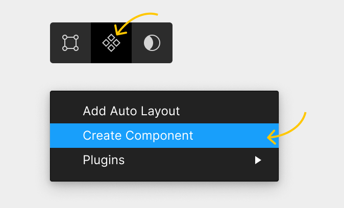

Create components

Tip: The keyboard shortcut to create a component is Ctrl Alt K on Windows, or ⌘⌥K on a Mac.
Make us into components to show hover states across your designs
Tip: The keyboard shortcut to create a component is Ctrl Alt K on Windows, or ⌘⌥K on a Mac.
Make us into components to show hover states across your designs